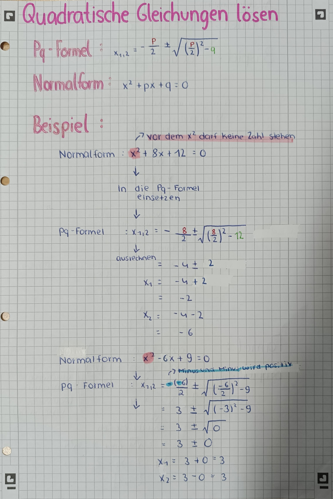
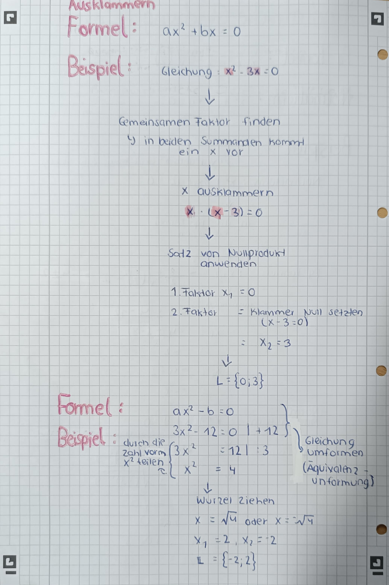

Quadratische Gleichungen meistern
Lerne die PQ-Formel und Quadratische Ergänzung verstehen
Ein interaktives Lernmodul für Klasse 10 mit Visualisierungen, Erklärungen und einem Quiz zur Selbstkontrolle.
Grundlagen verstehen
Verstehe die Grundlagen, bevor du die Gleichungen löst.
Quadratische Gleichungen
Eine quadratische Gleichung hat die allgemeine Form:
Bevor wir die PQ-Formel anwenden können, muss die Gleichung in die Normalform gebracht werden:
Dazu dividieren wir alle Terme durch den Koeffizienten a.
Die PQ-Formel
Die PQ-Formel ist eine universelle Lösungsmethode für quadratische Gleichungen in Normalform:
Der Ausdruck unter der Wurzel heißt Diskriminante D:
- D > 0: 2 verschiedene Lösungen
- D = 0: 1 Lösung (doppelte Nullstelle)
- D < 0: keine reellen Lösungen
Quadratische Ergänzung
Eine Umformungstechnik, um die Gleichung in ein lösbares Binom zu verwandeln:
- Konstante rechts: x² + px = −q
- Ergänze (p/2)²: x² + px + (p/2)² = (p/2)² − q
- Als Binom: (x + p/2)² = (p/2)² − q
- Wurzel ziehen: x + p/2 = ± √((p/2)² − q)
- Nach x auflösen: x = −p/2 ± √((p/2)² − q)
→ Das ist genau die PQ-Formel!
Interaktive Graphen
Verschiebe die Schieberegler, um p und q zu ändern und beobachte, wie sich die Parabel und ihre Nullstellen verändern.
💡 Beobachtungen:
- Die Nullstellen (rote Punkte) sind die Lösungen der Gleichung
- Die y-Achse schneidet die Parabel bei y = q
- Die Symmetrieachse liegt bei x = −p/2
- Je größer |D|, desto weiter sind die Nullstellen auseinander
Häufig gestellte Fragen
PQ-Formel: Schneller, direkt anwenden wenn die Gleichung in Normalform (x² + px + q = 0) vorliegt.
Quadratische Ergänzung: Manueller Prozess, hilft zu verstehen, warum die PQ-Formel funktioniert. Nutze sie zum Lernen und Verständnis.
In der Praxis: Nutze die PQ-Formel für schnelle Lösungen!
Wenn D < 0, können wir keine reelle Wurzel ziehen. Das bedeutet: Die Parabel schneidet die x-Achse nicht!
Sie liegt entweder komplett über oder komplett unter der x-Achse. Es gibt keine Lösungen in ℝ.
Beispiel: 2x² + 8x + 6 = 0
Schritt 1: Dividiere alle Terme durch den Koeffizienten von x² (hier: 2)
x² + 4x + 3 = 0
Jetzt ist die Gleichung in Normalform mit p = 4 und q = 3!
Ja! In der Mathematik gibt es komplexe Zahlen mit der imaginären Einheit i. Wenn D < 0, schreiben wir: √D = i·√|D|
D = 1 − 2 = −1
x = −1 ± i
In Klasse 10 konzentrierst du dich normalerweise nur auf reelle Lösungen.
Probe: Setze deine Lösungen in die ursprüngliche Gleichung ein!
Für x = −1: (−1)² + 4·(−1) + 3 = 1 − 4 + 3 = 0 ✓
Für x = −3: (−3)² + 4·(−3) + 3 = 9 − 12 + 3 = 0 ✓
Teste dein Wissen!
Beantworte die folgenden Fragen, um dein Verständnis zu überprüfen.
Mitschriften


